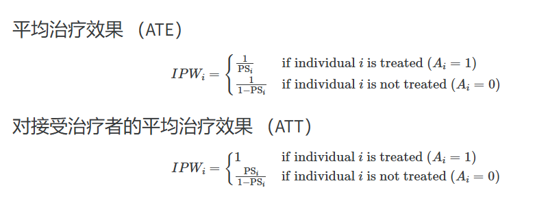

https://ehsanx.github.io/psm/cat.html
\[
\begin{equation}\begin{aligned}
Treatment\ Effect = \frac{\sum Y_{i}A_{i}w_{i}}{\sum A_{i} w_{i}} - \frac{\sum Y_{i}(1 - A_{i}) w_{i}}{\sum (1 - A_{i}) w_{i} }
\end{aligned}\end{equation}
\]
案例1
Show the code
data(lalonde, package='Matching')
ps_formula <- treat ~ age + I(age^2) + educ + I(educ^2) + black +
hisp + married + nodegr + re74 + I(re74^2) + re75 + I(re75^2) + u74 + u75
ps_fit <- glm(formula = ps_formula,
data = lalonde,
family = binomial(link = 'logit'))
lalonde$ps <- fitted(ps_fit)
PSAgraphics::cv.bal.psa(covariates = lalonde[,all.vars(ps_formula)[-1]],
treatment = lalonde$treat,
propensity = lalonde$ps,
strata = 5)
平均治疗效应ATE公式
\[
\begin{equation}\begin{aligned}
w_{ATE} = \frac{A_i}{PS_i} + \frac{1 - A_i}{1 - PS_i}
\end{aligned}\end{equation}
\]
Show the code
dat <- lalonde |> mutate(
ate_weight = psa::calculate_ps_weights(treat, ps, estimand = 'ATE'),
att_weight = psa::calculate_ps_weights(treat, ps, estimand = 'ATT'),
atc_weight = psa::calculate_ps_weights(treat, ps, estimand = 'ATC'),
atm_weight = psa::calculate_ps_weights(treat, ps, estimand = 'ATM')
)
psa::weighting_plot(ps = dat$ps,
treatment = dat$treat,
outcome = dat$re78,
estimand = 'ATE')
Show the code
# Check Balance with ATE Weights
glm(formula = ps_formula,
data = dat,
family = quasibinomial(link = 'logit'),
weights = ate_weight
) |> summary()
#>
#> Call:
#> glm(formula = ps_formula, family = quasibinomial(link = "logit"),
#> data = dat, weights = ate_weight)
#>
#> Coefficients:
#> Estimate Std. Error t value Pr(>|t|)
#> (Intercept) -2.000e-01 1.977e+00 -0.101 0.919
#> age 2.686e-02 8.513e-02 0.316 0.753
#> I(age^2) -4.695e-04 1.397e-03 -0.336 0.737
#> educ -6.326e-02 4.024e-01 -0.157 0.875
#> I(educ^2) 3.510e-03 2.259e-02 0.155 0.877
#> black -3.695e-03 3.714e-01 -0.010 0.992
#> hisp 2.232e-02 4.904e-01 0.046 0.964
#> married -8.664e-03 2.784e-01 -0.031 0.975
#> nodegr 4.154e-02 3.889e-01 0.107 0.915
#> re74 2.291e-05 7.493e-05 0.306 0.760
#> I(re74^2) -9.734e-10 2.337e-09 -0.416 0.677
#> re75 5.001e-06 1.015e-04 0.049 0.961
#> I(re75^2) -3.543e-10 5.032e-09 -0.070 0.944
#> u74 8.163e-02 4.449e-01 0.183 0.854
#> u75 -4.153e-04 3.566e-01 -0.001 0.999
#>
#> (Dispersion parameter for quasibinomial family taken to be 2.067727)
#>
#> Null deviance: 1232.6 on 444 degrees of freedom
#> Residual deviance: 1231.9 on 430 degrees of freedom
#> AIC: NA
#>
#> Number of Fisher Scoring iterations: 4
# 估计 ATE
lm(formula = re78 ~ treat,
data = dat,
weights = ate_weight) |> summary()
#>
#> Call:
#> lm(formula = re78 ~ treat, data = dat, weights = ate_weight)
#>
#> Weighted Residuals:
#> Min 1Q Median 3Q Max
#> -10856 -5892 -2478 4075 81529
#>
#> Coefficients:
#> Estimate Std. Error t value Pr(>|t|)
#> (Intercept) 4556 450 10.125 <2e-16 ***
#> treat 1558 637 2.446 0.0148 *
#> ---
#> Signif. codes: 0 '***' 0.001 '**' 0.01 '*' 0.05 '.' 0.1 ' ' 1
#>
#> Residual standard error: 9497 on 443 degrees of freedom
#> Multiple R-squared: 0.01333, Adjusted R-squared: 0.0111
#> F-statistic: 5.983 on 1 and 443 DF, p-value: 0.01483
psa::treatment_effect(treatment = dat$treat,
outcome = dat$re78,
weights = dat$ate_weight)
#> [1] 1558.088
ATT
\[
\begin{equation}\begin{aligned}
w_{ATT} = \frac{PS_i A_i}{PS_i} + \frac{PS_i (1 - A_i)}{1 - PS_i}
\end{aligned}\end{equation}
\]
Show the code
# Check Balance with ATT Weights
glm(formula = ps_formula,
data = dat,
family = quasibinomial(link = 'logit'),
weights = att_weight
) |> summary()
#>
#> Call:
#> glm(formula = ps_formula, family = quasibinomial(link = "logit"),
#> data = dat, weights = att_weight)
#>
#> Coefficients:
#> Estimate Std. Error t value Pr(>|t|)
#> (Intercept) 1.122e-01 1.754e+00 0.064 0.949
#> age 2.350e-02 8.362e-02 0.281 0.779
#> I(age^2) -4.382e-04 1.352e-03 -0.324 0.746
#> educ -1.279e-01 3.424e-01 -0.374 0.709
#> I(educ^2) 7.725e-03 1.931e-02 0.400 0.689
#> black -5.090e-02 3.388e-01 -0.150 0.881
#> hisp -7.925e-02 5.202e-01 -0.152 0.879
#> married -2.667e-02 2.691e-01 -0.099 0.921
#> nodegr 1.449e-01 3.623e-01 0.400 0.689
#> re74 9.327e-06 7.444e-05 0.125 0.900
#> I(re74^2) -9.597e-11 2.521e-09 -0.038 0.970
#> re75 -1.340e-05 9.575e-05 -0.140 0.889
#> I(re75^2) 7.444e-10 4.817e-09 0.155 0.877
#> u74 -6.362e-02 4.320e-01 -0.147 0.883
#> u75 8.469e-02 3.390e-01 0.250 0.803
#>
#> (Dispersion parameter for quasibinomial family taken to be 0.8614842)
#>
#> Null deviance: 513.54 on 444 degrees of freedom
#> Residual deviance: 513.06 on 430 degrees of freedom
#> AIC: NA
#>
#> Number of Fisher Scoring iterations: 4
# Estimate ATT
lm(formula = re78 ~ treat,
data = dat,
weights = att_weight) |> summary()
#>
#> Call:
#> lm(formula = re78 ~ treat, data = dat, weights = att_weight)
#>
#> Weighted Residuals:
#> Min 1Q Median 3Q Max
#> -6349 -3869 -1506 2400 53959
#>
#> Coefficients:
#> Estimate Std. Error t value Pr(>|t|)
#> (Intercept) 4557.4 454.2 10.033 < 2e-16 ***
#> treat 1791.7 642.8 2.787 0.00554 **
#> ---
#> Signif. codes: 0 '***' 0.001 '**' 0.01 '*' 0.05 '.' 0.1 ' ' 1
#>
#> Residual standard error: 6186 on 443 degrees of freedom
#> Multiple R-squared: 0.01724, Adjusted R-squared: 0.01502
#> F-statistic: 7.77 on 1 and 443 DF, p-value: 0.00554
psa::treatment_effect(treatment = dat$treat,
outcome = dat$re78,
weights = dat$att_weight)
#> [1] 1791.724
ATC
\[
\begin{equation}\begin{aligned}
w_{ATC} = \frac{(1 - PS_i) A_i}{PS_i} + \frac{(1 - e_i)(1 - A_i)}{1 - PS_i}
\end{aligned}\end{equation}
\]
Show the code
# Check Balance with ATC Weights
glm(formula = ps_formula,
data = dat,
family = quasibinomial(link = 'logit'),
weights = atc_weight
) |> summary()
#>
#> Call:
#> glm(formula = ps_formula, family = quasibinomial(link = "logit"),
#> data = dat, weights = atc_weight)
#>
#> Coefficients:
#> Estimate Std. Error t value Pr(>|t|)
#> (Intercept) -6.598e-01 2.390e+00 -0.276 0.783
#> age 3.097e-02 8.728e-02 0.355 0.723
#> I(age^2) -5.201e-04 1.449e-03 -0.359 0.720
#> educ 4.722e-02 4.975e-01 0.095 0.924
#> I(educ^2) -3.225e-03 2.766e-02 -0.117 0.907
#> black 3.598e-02 4.033e-01 0.089 0.929
#> hisp 7.912e-02 4.941e-01 0.160 0.873
#> married 7.290e-03 2.868e-01 0.025 0.980
#> nodegr -7.488e-02 4.205e-01 -0.178 0.859
#> re74 2.763e-05 7.658e-05 0.361 0.718
#> I(re74^2) -1.296e-09 2.319e-09 -0.559 0.577
#> re75 2.037e-05 1.073e-04 0.190 0.849
#> I(re75^2) -1.341e-09 5.282e-09 -0.254 0.800
#> u74 1.831e-01 4.577e-01 0.400 0.689
#> u75 -7.234e-02 3.730e-01 -0.194 0.846
#>
#> (Dispersion parameter for quasibinomial family taken to be 1.206136)
#>
#> Null deviance: 719.09 on 444 degrees of freedom
#> Residual deviance: 717.84 on 430 degrees of freedom
#> AIC: NA
#>
#> Number of Fisher Scoring iterations: 4
# Estimate ATC
lm(formula = re78 ~ treat,
data = dat,
weights = atc_weight) |> summary()
#>
#> Call:
#> lm(formula = re78 ~ treat, data = dat, weights = atc_weight)
#>
#> Weighted Residuals:
#> Min 1Q Median 3Q Max
#> -9104 -4555 -1672 3055 61098
#>
#> Coefficients:
#> Estimate Std. Error t value Pr(>|t|)
#> (Intercept) 4554.8 446.8 10.195 <2e-16 ***
#> treat 1391.0 632.6 2.199 0.0284 *
#> ---
#> Signif. codes: 0 '***' 0.001 '**' 0.01 '*' 0.05 '.' 0.1 ' ' 1
#>
#> Residual standard error: 7204 on 443 degrees of freedom
#> Multiple R-squared: 0.0108, Adjusted R-squared: 0.008564
#> F-statistic: 4.835 on 1 and 443 DF, p-value: 0.0284
psa::treatment_effect(treatment = dat$treat,
outcome = dat$re78,
weights = dat$atc_weight)
#> [1] 1391.019
Average Treatment Effect Among the Evenly Matched (ATM)
\[
\begin{equation}\begin{aligned}
w_{ATM} = \frac{min\{PS_i, 1 - PS_i\}}{A_i PS_i (1 - A_i)(1 - PS_i)}
\end{aligned}\end{equation}
\]
Show the code
# Check Balance with ATC Weights
glm(formula = ps_formula,
data = dat,
family = quasibinomial(link = 'logit'),
weights = atm_weight
) |> summary()
#>
#> Call:
#> glm(formula = ps_formula, family = quasibinomial(link = "logit"),
#> data = dat, weights = atm_weight)
#>
#> Coefficients:
#> Estimate Std. Error t value Pr(>|t|)
#> (Intercept) 1.657e-01 2.129e+00 0.078 0.938
#> age -2.418e-02 8.893e-02 -0.272 0.786
#> I(age^2) 4.192e-04 1.465e-03 0.286 0.775
#> educ 6.308e-02 4.304e-01 0.147 0.884
#> I(educ^2) -3.347e-03 2.420e-02 -0.138 0.890
#> black 1.480e-02 3.577e-01 0.041 0.967
#> hisp -3.495e-02 5.203e-01 -0.067 0.946
#> married -3.486e-03 2.736e-01 -0.013 0.990
#> nodegr -4.659e-02 3.825e-01 -0.122 0.903
#> re74 -2.333e-05 7.526e-05 -0.310 0.757
#> I(re74^2) 8.298e-10 2.510e-09 0.331 0.741
#> re75 -7.419e-06 9.758e-05 -0.076 0.939
#> I(re75^2) 7.957e-10 4.775e-09 0.167 0.868
#> u74 -6.630e-02 4.360e-01 -0.152 0.879
#> u75 -3.051e-02 3.436e-01 -0.089 0.929
#>
#> (Dispersion parameter for quasibinomial family taken to be 0.7850194)
#>
#> Null deviance: 467.94 on 444 degrees of freedom
#> Residual deviance: 467.73 on 430 degrees of freedom
#> AIC: NA
#>
#> Number of Fisher Scoring iterations: 3
# Estimate ATC
lm(formula = re78 ~ treat,
data = dat,
weights = atm_weight) |> summary()
#>
#> Call:
#> lm(formula = re78 ~ treat, data = dat, weights = atm_weight)
#>
#> Weighted Residuals:
#> Min 1Q Median 3Q Max
#> -6212 -3734 -1398 2354 54096
#>
#> Coefficients:
#> Estimate Std. Error t value Pr(>|t|)
#> (Intercept) 4504.6 459.8 9.797 < 2e-16 ***
#> treat 1707.7 648.8 2.632 0.00878 **
#> ---
#> Signif. codes: 0 '***' 0.001 '**' 0.01 '*' 0.05 '.' 0.1 ' ' 1
#>
#> Residual standard error: 5960 on 443 degrees of freedom
#> Multiple R-squared: 0.0154, Adjusted R-squared: 0.01318
#> F-statistic: 6.928 on 1 and 443 DF, p-value: 0.008783
psa::treatment_effect(treatment = dat$treat,
outcome = dat$re78,
weights = dat$atm_weight)
#> [1] 1707.689
案例2
Show the code
library(twang)
data(AOD)
head(AOD)
#> treat suf12 illact crimjust subprob subdep white
#> 1 community 0.008280087 -0.93095580 0.9439362 1.477879 2.1423973 0
#> 2 community -0.660202154 0.41718868 0.1864991 -0.561166 0.6560225 0
#> 3 community 0.628781873 0.08444314 -0.5298800 1.136902 0.9940437 0
#> 4 community -0.133334668 1.09399427 -0.6323299 1.203522 0.2401439 0
#> 5 community 2.408125409 1.41257274 -1.0493772 -0.165523 0.8834611 0
#> 6 community 0.354360794 1.20514029 -1.9882374 1.445932 0.5566021 0
Show the code
table(AOD$treat)
#>
#> community metcbt5 scy
#> 200 200 200
倾向分数的估计
多分类变量
VGLM
拟合向量广义线性模型 （VGLMs） 来拟合具有 3 类暴露变量的倾向得分模型：
Show the code
require(VGAM)
psFormula <- "treat ~ illact + crimjust + subprob + subdep + white"
ps.model <- vglm(psFormula,family=multinomial, data=AOD)
AOD$ps <- data.frame(fitted(ps.model))
AOD %>% head() %>%
unnest(cols = c(ps),names_sep = "_")
#> # A tibble: 6 × 10
#> treat suf12 illact crimjust subprob subdep white ps_community ps_metcbt5
#> <fct> <dbl> <dbl> <dbl> <dbl> <dbl> <int> <dbl> <dbl>
#> 1 commun… 0.00828 -0.931 0.944 1.48 2.14 0 0.325 0.427
#> 2 commun… -0.660 0.417 0.186 -0.561 0.656 0 0.360 0.324
#> 3 commun… 0.629 0.0844 -0.530 1.14 0.994 0 0.334 0.336
#> 4 commun… -0.133 1.09 -0.632 1.20 0.240 0 0.333 0.303
#> 5 commun… 2.41 1.41 -1.05 -0.166 0.883 0 0.361 0.274
#> 6 commun… 0.354 1.21 -1.99 1.45 0.557 0 0.329 0.266
#> # ℹ 1 more variable: ps_scy <dbl>
GBM
通过 GBM 估计倾向分数
Show the code
set.seed(1235)
mnps.AOD.ATT <- mnps(treat ~ illact + crimjust + subprob + subdep + white,
data = AOD,
interaction.depth = 3,
estimand = "ATT",
treatATT = "community", # the treated
verbose = FALSE,
stop.method = "es.mean",
n.trees = 1000)
IPW 计算

将PS转换为IPW
Show the code
AOD$w.ATT <- twang::get.weights(mnps.AOD.ATT, stop.method = "es.mean")
summary(AOD$w.ATT)
#> Min. 1st Qu. Median Mean 3rd Qu. Max.
#> 0.1494 0.7265 1.0000 0.8896 1.0000 1.8823
by(AOD$w.ATT, AOD$treat, summary)
#> AOD$treat: community
#> Min. 1st Qu. Median Mean 3rd Qu. Max.
#> 1 1 1 1 1 1
#> ------------------------------------------------------------
#> AOD$treat: metcbt5
#> Min. 1st Qu. Median Mean 3rd Qu. Max.
#> 0.1494 0.4939 0.7204 0.7529 0.9460 1.8386
#> ------------------------------------------------------------
#> AOD$treat: scy
#> Min. 1st Qu. Median Mean 3rd Qu. Max.
#> 0.3548 0.7619 0.9630 0.9159 1.0263 1.8823
weighted_data平衡诊断
Show the code
twang::bal.table(mnps.AOD.ATT,
digits = 2,
collapse.to = "covariate")[,c("max.std.eff.sz",
"stop.method")]
#> max.std.eff.sz stop.method
#> 1 0.09 unw
#> 2 0.10 unw
#> 3 0.09 unw
#> 4 0.10 unw
#> 5 0.11 unw
#> 6 0.01 es.mean
#> 7 0.03 es.mean
#> 8 0.03 es.mean
#> 9 0.06 es.mean
#> 10 0.07 es.mean
Show the code
plot(mnps.AOD.ATT, plots = 3)
加权结局模型的效应估计
Show the code
require(survey)
design.mnps.ATT <- svydesign(ids=~1, weights=~w.ATT, data=AOD)
fit <- svyglm(suf12 ~ treat, design = design.mnps.ATT)
require(Publish)
publish(fit, intercept = FALSE)
#> Variable Units Coefficient CI.95 p-value
#> treat community Ref
#> metcbt5 0.20 [-0.00;0.41] 0.05129
#> scy 0.08 [-0.11;0.27] 0.41503